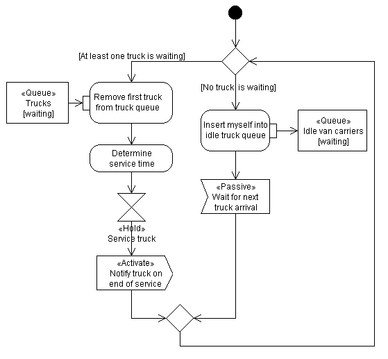
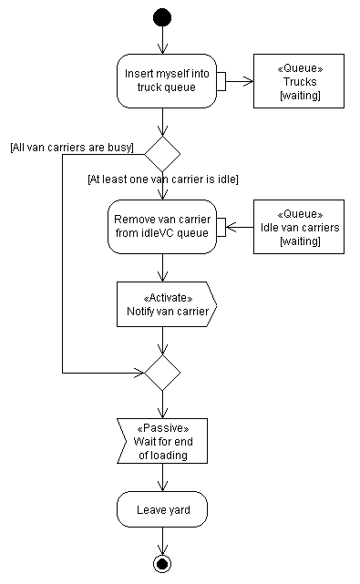
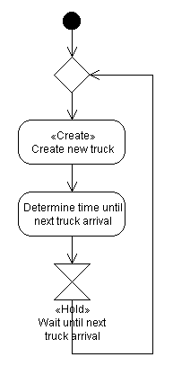

Processes Step by Step
Model Design
UML Diagrams of Life Cycles
While describing the sequence of activities for the two entity types (van carrier, truck) in our model, you may have encountered some problems regarding the interaction of van carrier and truck. They do perform a joint activity -- the loading of a container -- but only one of them can be allocated the responsibility for it, i.e. only one of them can actually "do" it. In our case, the natural choice seems to be the van carrier since it is the one (actively) loading the container onto the truck, whereas the truck is only (passively) receiving the container. But keep in mind that in more complex situations the choice may not be so clear.
Another detail we have neglected so far is how to model waiting space. The trucks need to wait in line until a van carrier is free to fetch and load their container. Well, the term queueing system already says it all: this is done using queues. Our model will need a queue for trucks to enter in case the van carrier is busy. And it will use a second queue for the van carriers to enter in case there are no trucks to serve. This second queue might not seem necessary so long as there's only one van carrier to consider. But it has several advantages:
- It is a flexible means to keep track of the van carrier(s). All other solutions become difficult to use if there is more than one van carrier in the model.
- In DESMO-J, queues automatically provide statistics about average queue length and waiting time, for example. Thus, we don't have to bother about collecting such data when we implement our model.
Here's a UML activity diagram of the van carrier's life cycle:

When the VC enters its life cycle it checks if there are any trucks waiting. If there aren't any, the VC inserts itself into the queue for idle VCs and passivates. If there is at least one truck waiting, the VC will remove it from the truck queue and serve it (fetch a container and load it onto the truck). Afterwards, it reactivates the truck (which has been passive since it started waiting) so that it can resume its own life cycle. The VC will then again check if there are any trucks waiting etc. Since the VC is a permanent entity, it will iterate its life cycle in an endless loop.
Here's a UML activity diagram of the truck's life cycle:
 |
Each truck starts its life cycle with inserting itself into the queue for waiting trucks. It then checks if there is an idle VC ready to serve it. If there is one, it removes the VC from the queue of idle VCs and activates it. This is necessary since idle VCs passivate themselves. The truck then just passivates, either waiting for its turn or being directly served by the reactivated VC. After service is completed, the truck is reactivated by the VC and can then leave the terminal -- which in our model means that the process representing the truck will terminate. Remember that trucks are temporary entities which enter and leave the system at some points in time. |
 |